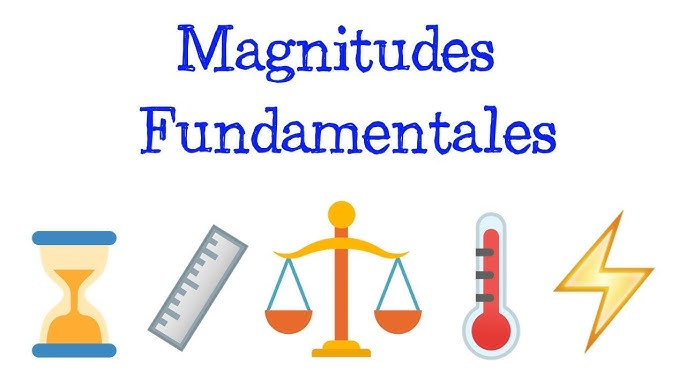
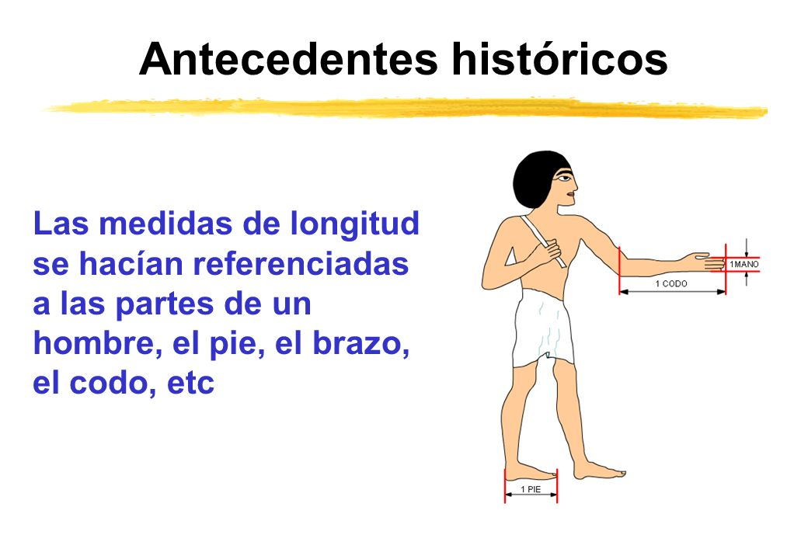

unidades

Magnitud
Se llama magnitud a todo aquello que puede ser medido (figura 2.1). La longitud de un objeto o cuerpo físico (ya sea largo, ancho, alto, su profundidad, su espesor, su diámetro externo o interno), la masa, el tiempo, el volumen, el área, la velocidad, la fuerza, etc., son ejemplos de magnitudes. Los sentimientos como el amor, el odio, la felicidad, la ira y la envidia no pueden ser medidos; por tanto, no son magnitudes.
Medir
Es comparar una magnitud con otra de la misma especie que de manera arbitraria o convencional se toma como base, unidad o patrón de medida.
Unidad de medida
Recibe el nombre de unidad de medida o patrón toda magnitud de valor conocido y perfectamente definido
que se utiliza como referencia para medir y expresar el valor de otras magnitudes de la misma especie, una de as principales características que debe cumplir un patrón de medida es que sea reproducible.
Historia de las unidades de medida y de los sistemas de unidades
Cuando el hombre primitivo tuvo la necesidad de encontrar referencias que le permitieran hablar de lapsos menores a los transcurridos entre la salida del Sol o de la Luna, observó que la sombra proyectada por una roca se desplazaba por el suelo a medida que el tiempo pasaba Se le ocurrió entonces colocar una piedra en lugares en los cuales se realizara alguna actividad especial, o bien, retornaría a su caverna para comer cuando la sombra de la roca llegara hasta donde había colocado la piedra. Gracias al desplazamiento de la sombra de la roca proyectada por el Sol, el hombre tuvo su primer reloj para medir el tiempo.También trataba de comparar el peso de dos objetos para saber cuál era mayor al colocar uno en cada mano. Pero un
buen día, alguien tuvo la idea de poner en equilibrio una tabla con una roca en medio y colocar dos objetos en ambos extremos de la tabla, así el objeto que más bajara era el de mayor peso. Se había inventado la primera y burda
balanza.Para medir la longitud, el hombre recurría a medidas tomadas de su propio cuerpo. Los egipcios usaban la brazada (figura 2.3), cuya longitud equivalía a las dimensiones de un hombre con los brazos extendidos. Los ingleses usaban como patrón la longitud del pie de su rey Los romanos usaban el paso y la milla equivalente a mil pasos. Para ellos un paso era igual a dos pasos de los actuales, pues cada uno era doble, ya que cada pie daba un avance.

También se utilizaron otras partes del cuerpo Cuando Roma se integra en un imperio y conquista muchos territorios (siglo ii a. C. al siglo iv d. C.) trata de poner orden a la diversidad de unidades y establece la libra como unidad de peso y el pie como unidad de longitud; para ello, modela un cuerpo representativo del peso de una libra patrón y una barra de bronce que muestre la longitud equivalente al pie.
Por primera vez existía una misma forma de pesar y de medir longitudes.Cuando se dio la decadencia del Imperio Romano y el poder político y económico que ejercía quedó en ruinas, nuevamente surgió la anarquía en las unidades de medida, la cual duró todo el periodo de la Edad Media (siglo
v al siglo xv d. C.). Fue hasta 1790 cuando la Asamblea Constituyente de Francia, por medio de la Academia de
Ciencias de París, extendió una invitación a los países para enviar a sus hombres de ciencia con el objeto de unificar los sistemas de pesas y medidas, y adoptar uno solo para todo el mundo.